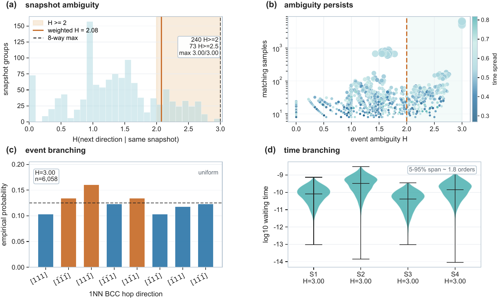
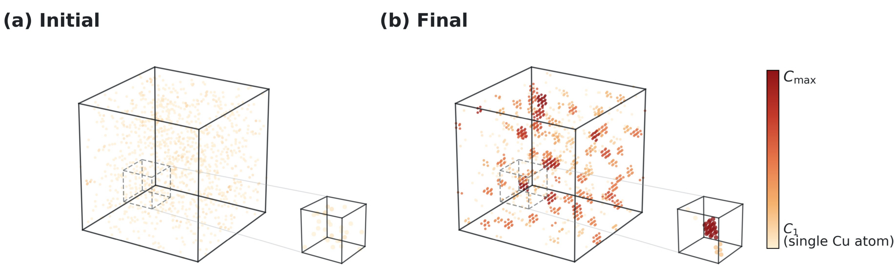
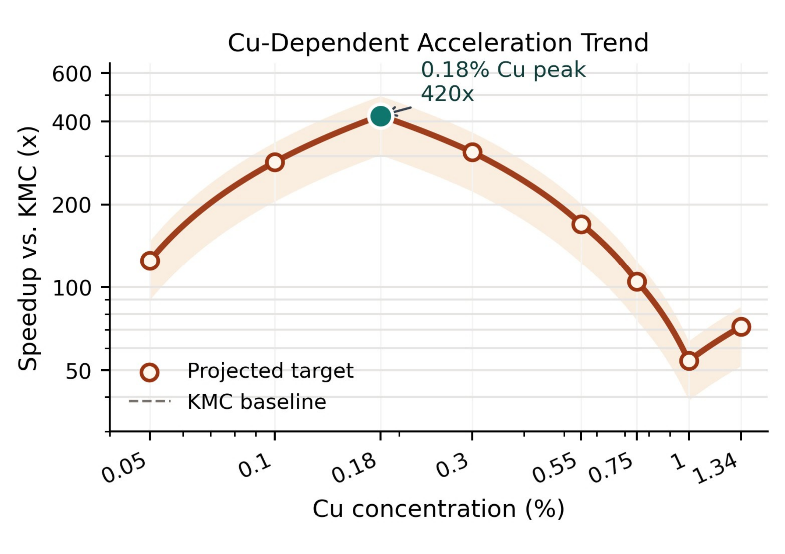
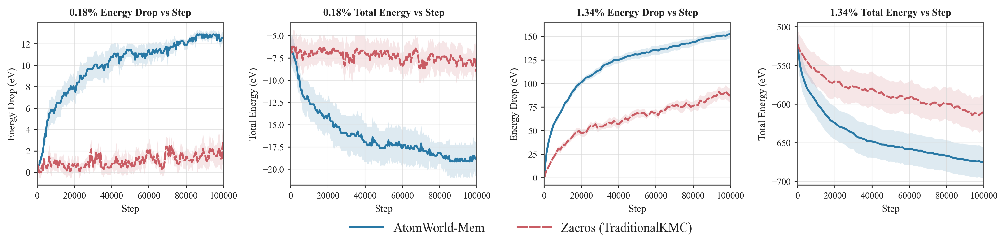
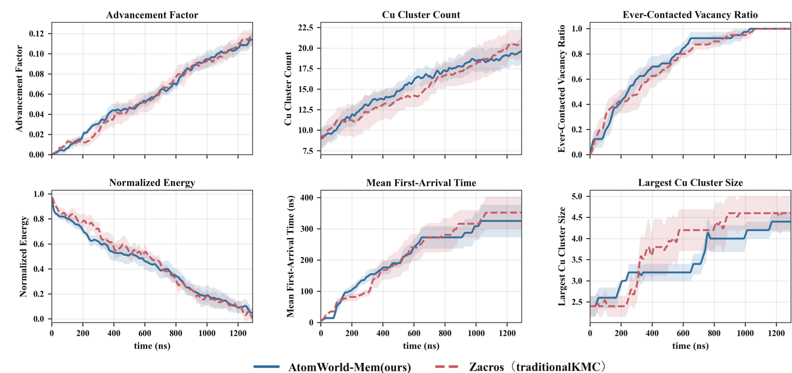
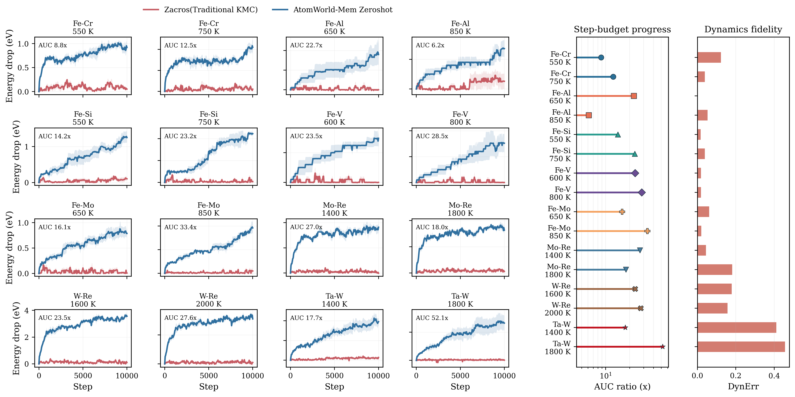

Memory-restored world state
Combines spatial keyframes, recent legal-event history, and recurrent structural memory to infer hidden evolutionary context.
Memory-Restored World States for Long-Horizon Atomistic Evolution
1Sichuan University, Chengdu, China
2Institute of Computing Technology,
Chinese Academy of Sciences, Beijing, China
3School of Computer Science,
Peking University, Beijing, China
4Institute for AI Industry Research (AIR),
Tsinghua University, Beijing, China
†Equal contribution ·
‡Corresponding author
Long-horizon atomistic evolution requires more than the current crystal configuration.
Conventional Kinetic Monte Carlo (KMC) advances an atomistic system through physically admissible local events and updates physical time from transition rates. However, an instantaneous snapshot cannot always reveal whether an event is a reversible local fluctuation or a transition with persistent structural consequences.
This creates snapshot ambiguity: locally identical observations may arise from different dynamical histories, branch into different future-event distributions, and exhibit substantially different waiting-time scales. Under a finite event budget, conventional simulation can therefore spend many steps in locally metastable motion while rare but consequential transitions remain delayed.
AtomWorld-Mem formulates this challenge as a memory-based world-state restoration problem. It combines multi-scale atomistic keyframes, recent legal-event history, and recurrent structural memory to restore hidden evolutionary context and prioritize simulator-provided legal events.


Memory restoration connects partial atomistic observations with physically constrained long-horizon evolution.
Combines spatial keyframes, recent legal-event history, and recurrent structural memory to infer hidden evolutionary context.
Encodes vacancy-centered short-range topology together with sparse long-range defect information.
Scores only physically admissible vacancy exchanges supplied by the simulator and never generates unconstrained moves.
Compares methods from matched initial-state families using equal numbers of legal KMC events.
Uses a shared memory-conditioned hazard field for event preference and expected waiting-time reasoning.
Transfers the learned restoration mechanism to 16 unseen alloy-temperature domains without finetuning.
Memory integrates spatial keyframes with past legal events, and the restored state ranks the current legal KMC event set.
A graph encoder summarizes dense short-range topology around each vacancy, while an attention encoder captures sparse long-range defect context.
Short-term memory represents recent transition competition, while recurrent memory accumulates slower aggregation and defect-evolution trends.
Every admissible event is represented using event-local structure, hop direction, and energetic or kinetic features.
Recurrent PPO optimizes long-horizon progress while physical priors and time-consistency objectives regularize the policy.
AtomWorld-Mem improves fixed-budget progress while preserving physically meaningful structural and kinetic trends.
The gain remains positive throughout the tested concentration range, peaks near 0.18% Cu, and averages 186×.

Under the same 100k legal-event budget, AtomWorld-Mem reaches larger energy drops and lower total energies at both Cu concentrations.

AtomWorld-Mem remains aligned with reference dynamics across energetic, structural, and vacancy-transport observables in physical-time space.

Without finetuning, AtomWorld-Mem improves fixed-budget energy-drop trajectories across 16 unseen domains, obtaining a median AUC gain of 22.9× and a maximum gain of 52.1×.

Clone the repository and install AtomWorld-Mem in an isolated Python environment.
git clone https://github.com/RSIScience/AtomWorld-Mem.git cd AtomWorld-Mem python -m venv .venv python -m pip install --upgrade pip python -m pip install -e .
If you find AtomWorld-Mem useful in your research, please cite:
@article{luo2026atomworldmem,
title = {AtomWorld-Mem: Memory-Restored World States for
Long-Horizon Atomistic Evolution},
author = {Luo, Tian and Zhang, Ruge and Han, Haozhi and
Chen, Yifeng and Zhang, Yunquan and Cao, Ting and
Liu, Yunxin and Li, Kun},
year = {2026},
url = {https://github.com/RSIScience/AtomWorld-Mem}
}